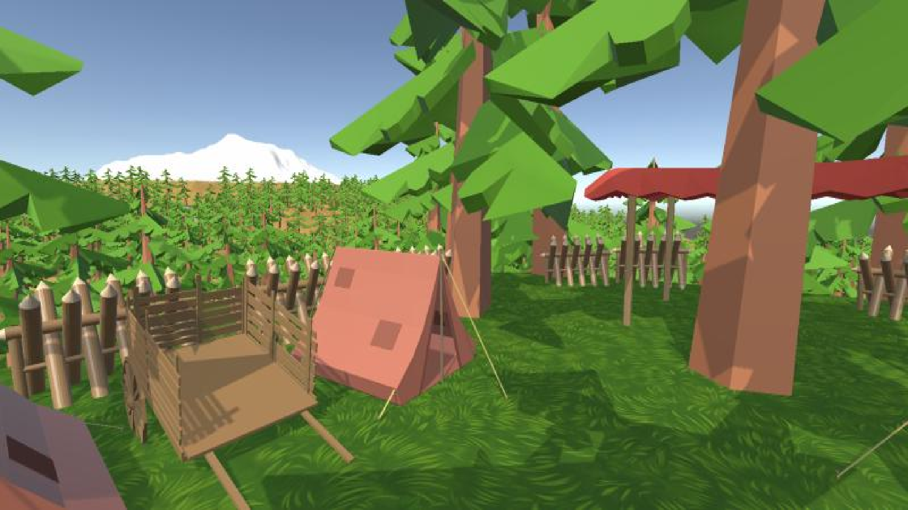
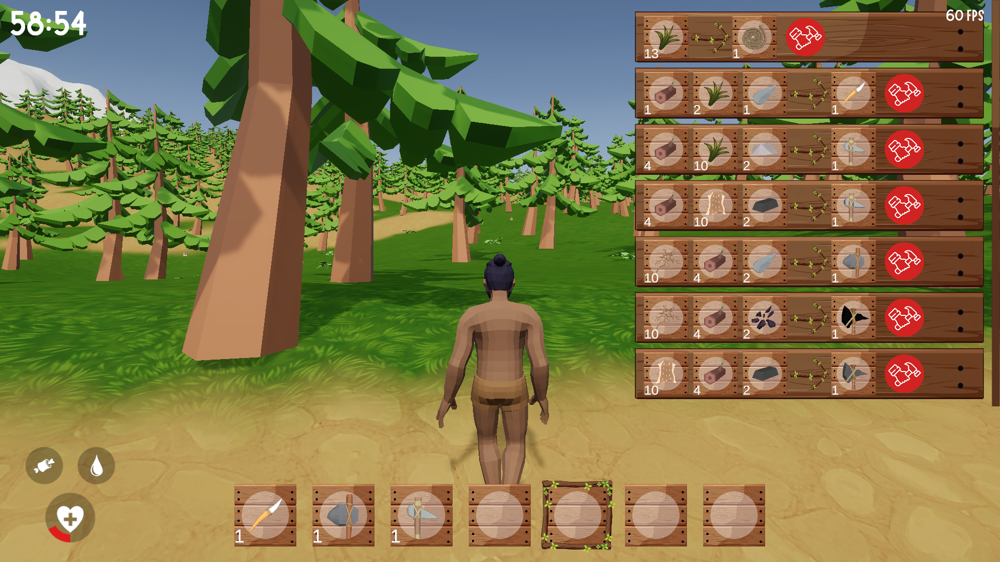
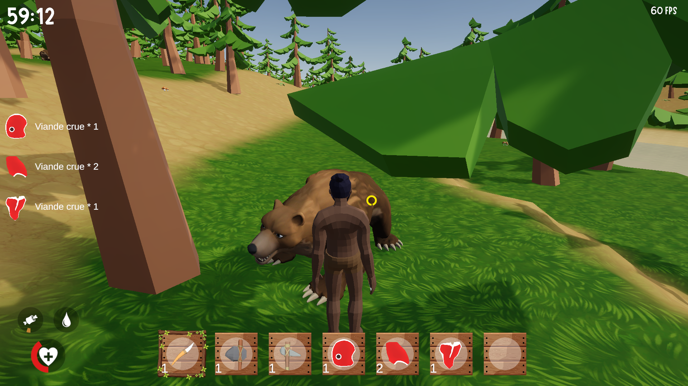
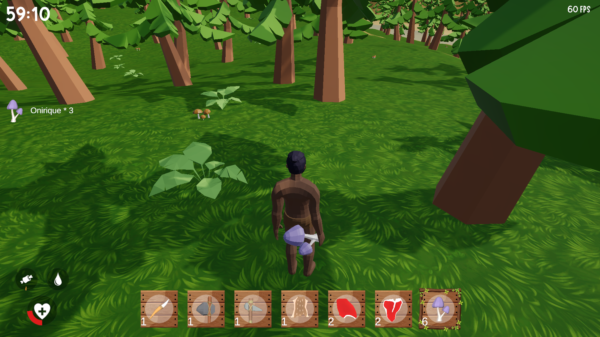

Aperçu de l'environnement du jeu

Dans le cadre universitaire, lors de ma deuxième année, j'ai travaillé sur un projet de jeu vidéo. Le choix du type de jeu était libre, sans thème imposé.
Mon rôle au sein de l’équipe était celui de Gameplay Programmer et Game Designer, chargé de développer les mécaniques de gameplay, de créer des modèles 3D et de concevoir le level design.
Dans un premier temps, j'ai collaboré avec mon équipe pour définir la vision globale du jeu. Par la suite, j'ai concrétisé les éléments de gameplay et de modélisation 3D retenus. Enfin, il a fallu réalisé un build du jeu et préparé sa présentation.


Techniques :
Transversales :
Humaines :

Ce projet sur Unity Engine m'a permis de développer des compétences en programmation C#, en modélisation 3D et en level design.
J'ai également découvert de nouvelles notions essentielles à la création d'un jeu vidéo, telles que les LOD, les draw calls, les atlas de textures, entre autres.
Ce projet m'a particulièrement plu, car il offrait une grande liberté créative, aucun sujet imposé ne limitant notre imagination.
Il m'a également permis de réaliser que, même au sein d'une petite équipe de six personnes, la création d'un jeu vidéo est une tâche longue, complexe et exigeante, nécessitant des compétences dans de nombreuses disciplines.
Cette expérience a été pour moi une étape importante, me donnant un premier aperçu concret de ce que peut impliquer le travail dans l'industrie du jeu vidéo.